Bend · desktop walkthrough · style-review draft
Bend: longer bundles, multiple directions, loops and skips
Start with two 256 bp 3×6 square-lattice clusters. Choose Tools → Bend and select one cluster, bend it in two directions, then inspect loops and skips in Full 3D and the cadnano-style editor.
Follow the illustrated steps below to use the tool.
Numbered arrows indicate click targets; dashed boxes show drag extents. Click any screenshot to open it at full size.
Download exampleMarkdown guideConstruction verificationUX findings
Demonstrated scope
- Open Tools → Bend on a two-cluster 256 bp design; select one 3×6 cluster and apply two 60° bends in directions 0° and 90° with live plane guides
- Generate staple routing and loops/skips with built-in tools; inspect the same marks in Full 3D and the cadnano-style editor
Start with a longer model
Use the Extrude workflow to make two separated 3-row × 6-column square-lattice clusters, each 256 bp long. All 3D images use Full representation. This lesson makes two successive 60° bends in different directions, then generates and inspects loop/skip marks through NADOC’s own tools.
Start with two 3×6 square-lattice clusters, each 256 bp long. Right-drag to view the clusters from the side, then press F to fit.

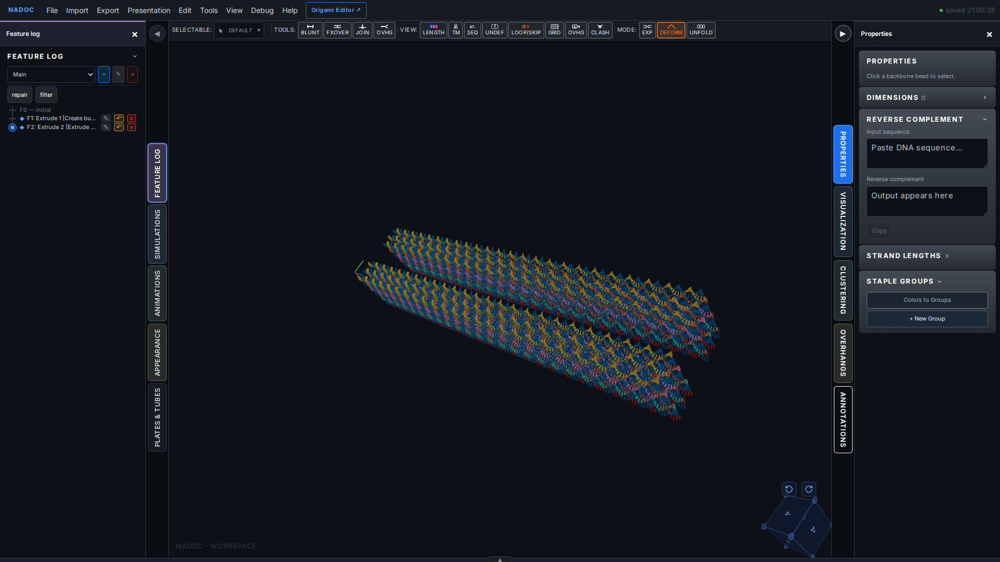
Bend the first half
Choose Tools → Bend, then click the original 18-helix cluster. Set Plane 1 to 0 bp and Plane 2 to 127 bp, Angle to 60° and Direction to 0°. Angle controls the amount of bending; Direction rotates its orientation around the bundle axis. The Curvature (nm) field is the linked bend radius. After applying, reopen the saved part for a clean result view if the tool overlay remains dimmed (GUIDE-UX-008).
Choose Tools → Bend to open the tool and select a cluster.

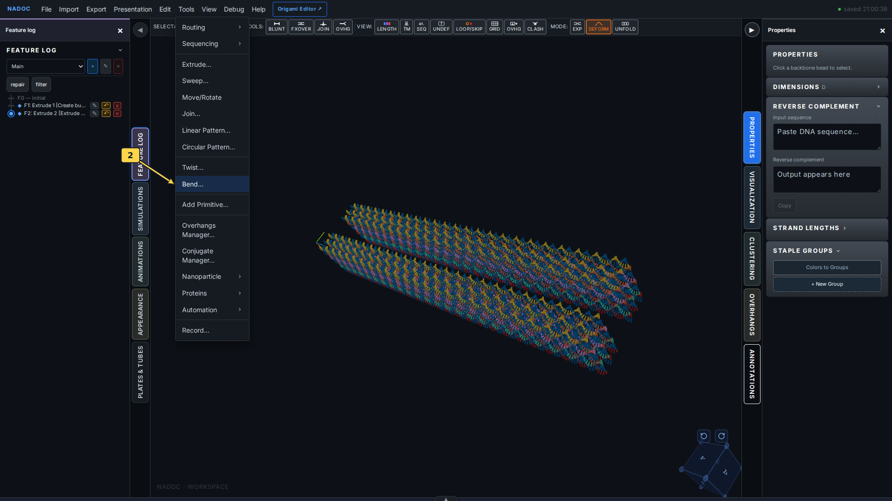
Click the original 3×6 bundle to choose its cluster for bending. The second cluster provides a straight reference.

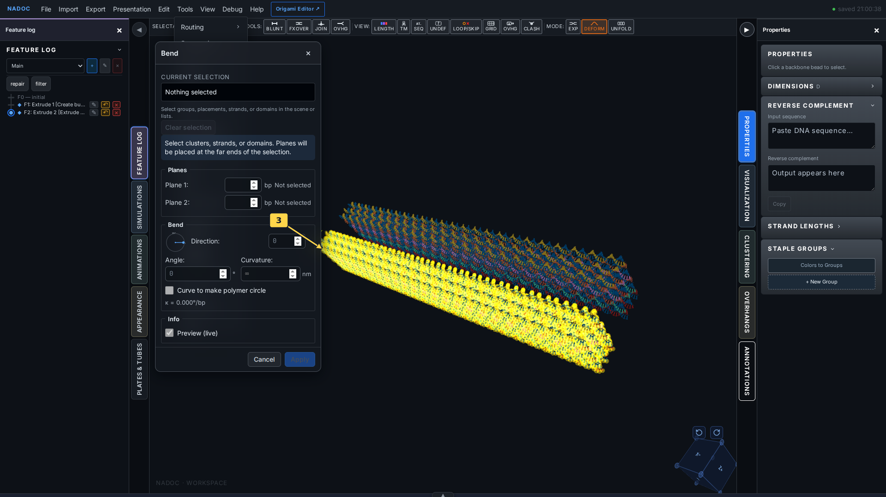
Set planes 0–127 bp, Angle 60° and Direction 0°. Inspect both plane guides on the preview, then click Apply.

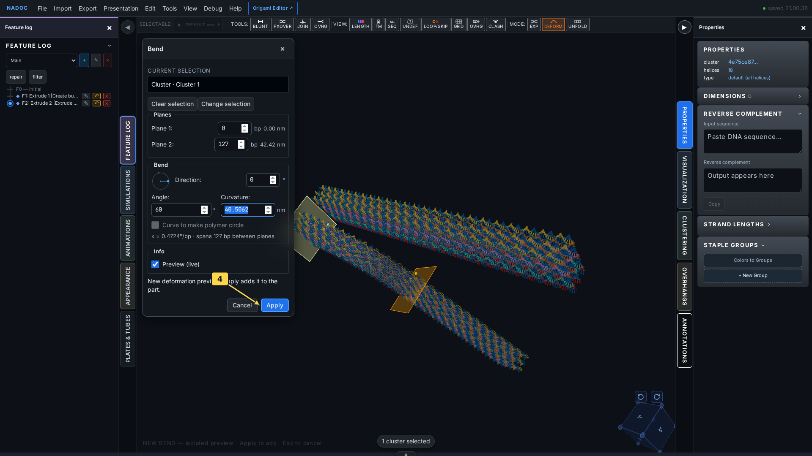
The first half now bends through 60°. The remaining half continues from its new orientation.

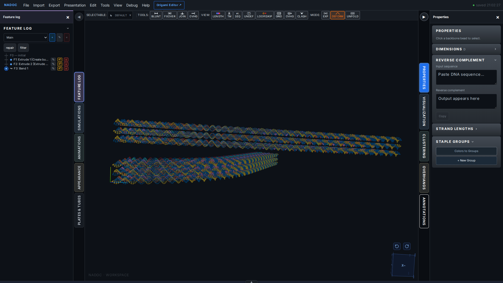
Bend in another direction
Choose Tools → Bend again and select the same cluster. For the second half, use planes 128–255 bp, Angle 60° and Direction 90°. These are adjacent intervals, so the bends form one continuous multidirectional shape. Direction is measured in the bundle’s local frame; it is distinct from the camera angle.
Set planes 128–255 bp, Angle 60° and Direction 90°. Inspect both plane guides on the preview, then click Apply.

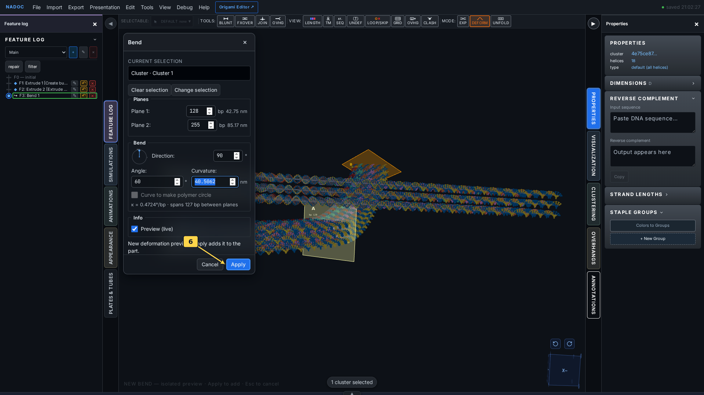
The second half bends through another 60°, with Direction 90°. The selected cluster turns in two directions alongside the straight second cluster.

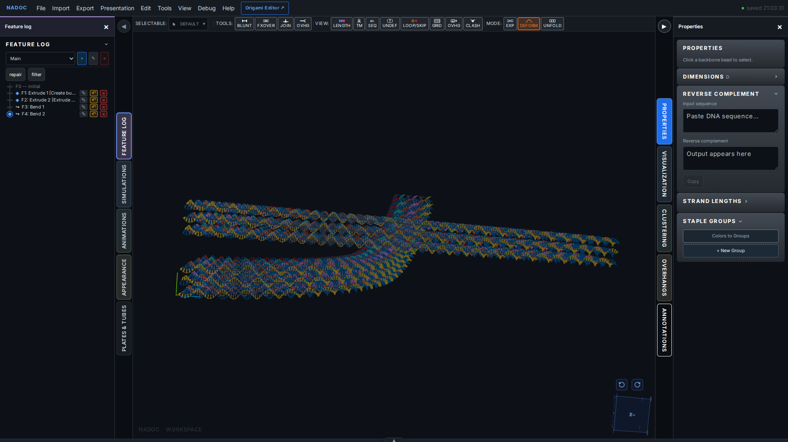
Generate loops and skips
Geometric Bend defines the displayed shape. Add Loops/Skips creates the discrete insertion/deletion marks that accompany that design intent; use LOOP/SKIP to display the saved marks. The routing action requires crossovers, so first run Full Autostaple with Standard settings on this demonstration bundle.
Choose Tools → Routing → Full Autostaple to create the prerequisite staple routing and crossovers.

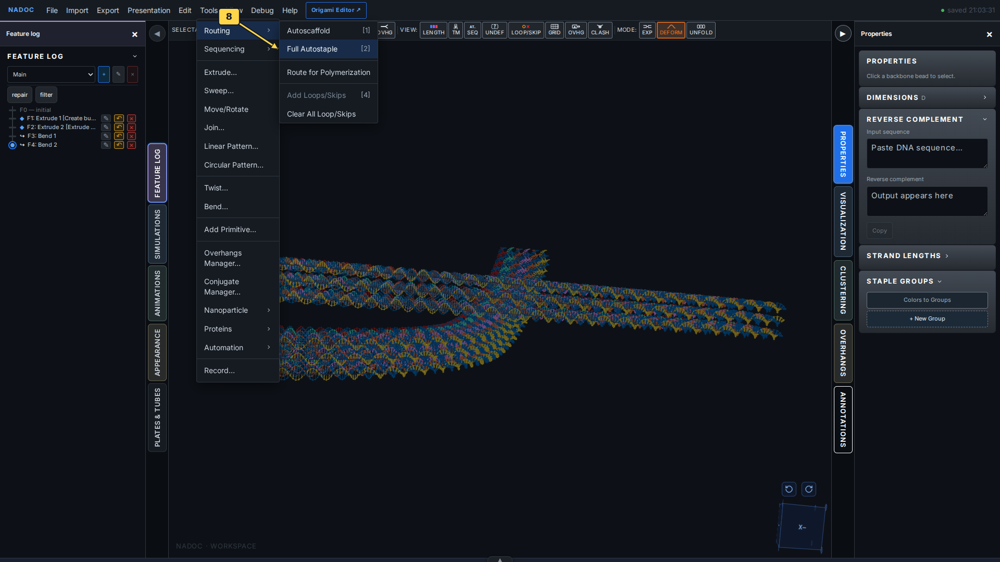
Keep Standard selected and click OK.

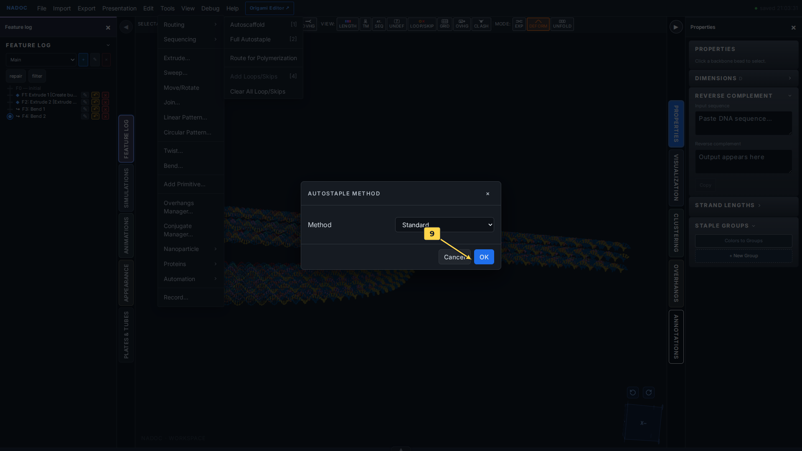
Choose Tools → Routing → Add Loops/Skips to generate marks for the square lattice and its bends.

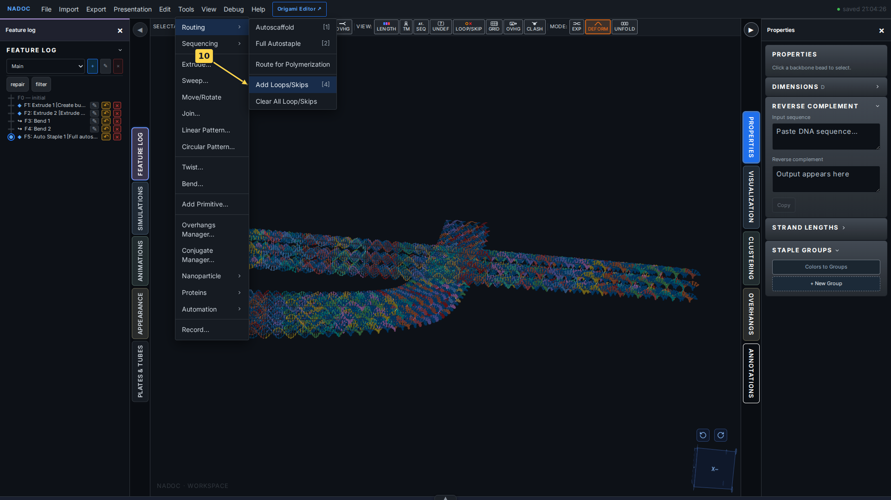
Inspect loops and skips in 3D
Click LOOP/SKIP in the View toolbar (P). Orange loop markers indicate inserted bases and red × markers indicate deleted bases. The overlay follows the bent geometry while Full remains selected.
Click LOOP/SKIP in the View toolbar to show the markers.

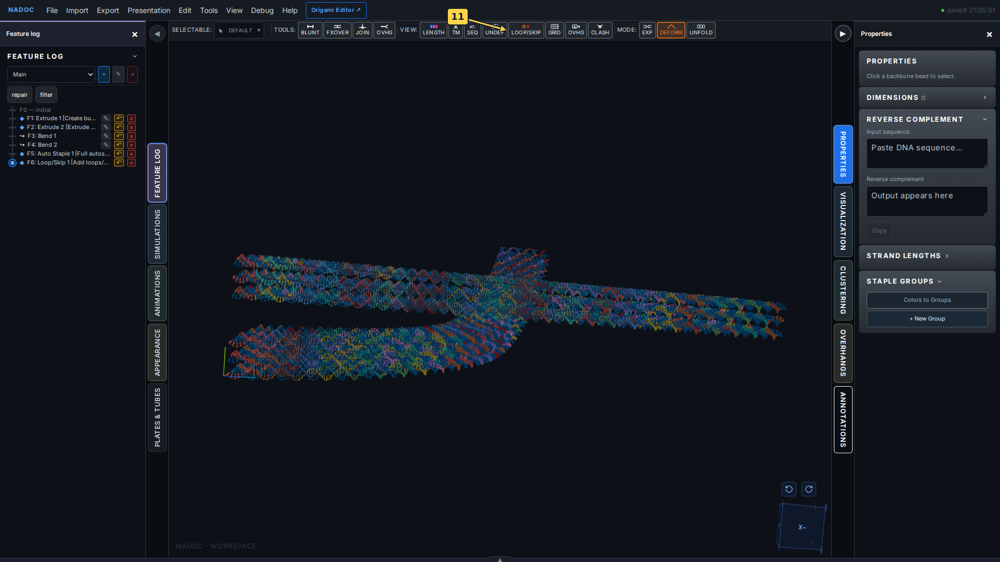
Full 3D view with loop and skip highlights on the bent 3×6 bundle. Compare the marker distribution across the two bend intervals.

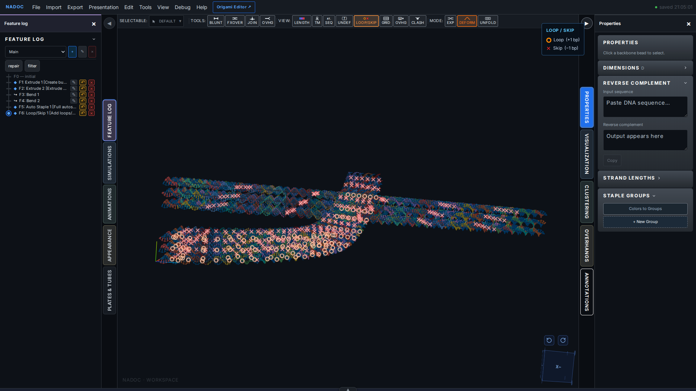
Inspect the same marks in the cadnano editor
Open Origami Editor from the top bar. NADOC’s built-in cadnano-style path view shows the same document and loop/skip marks in a flat base-pair layout. Press F to fit, then zoom in to read individual symbols. The path view is a 2D topology view; the 3D window remains in Full representation.
Click Origami Editor to open the same document in NADOC’s cadnano-style editor.

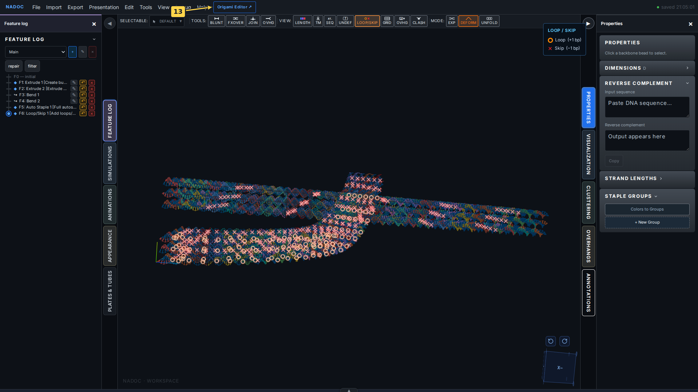
The cadnano-style editor shows the same routed bundle and saved loop/skip marks. Blue circles denote loops; red × symbols denote skips.

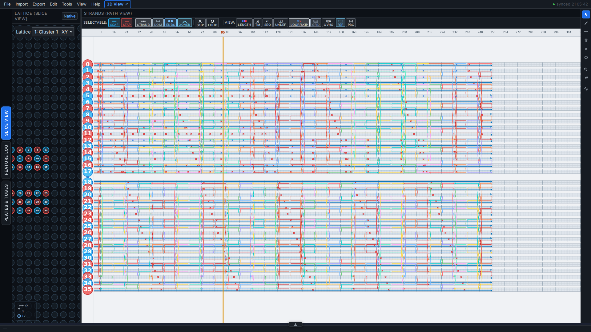
Scroll up over the path view to enlarge the symbols. Blue loop circles and red skip crosses appear directly on the routed strands; LOOP/SKIP remains enabled in the View toolbar.

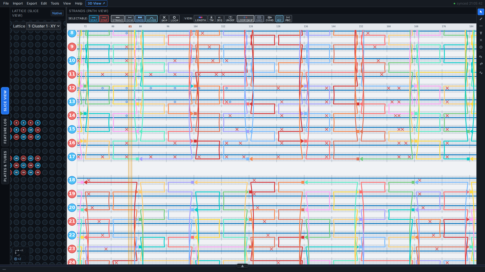